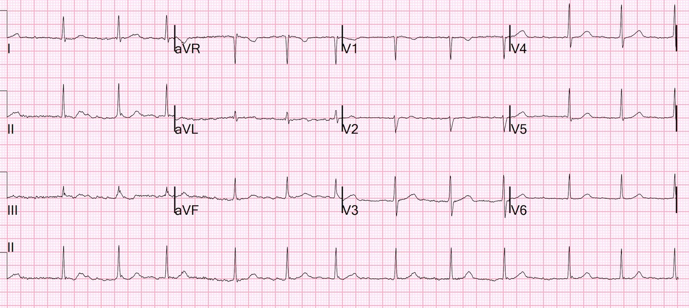
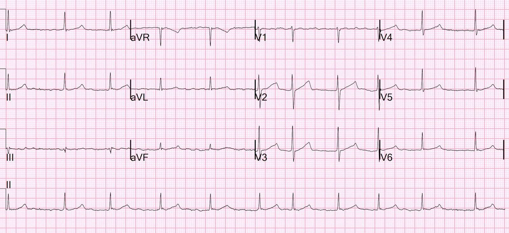
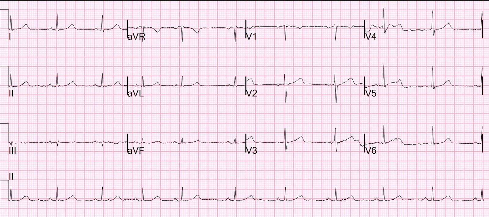
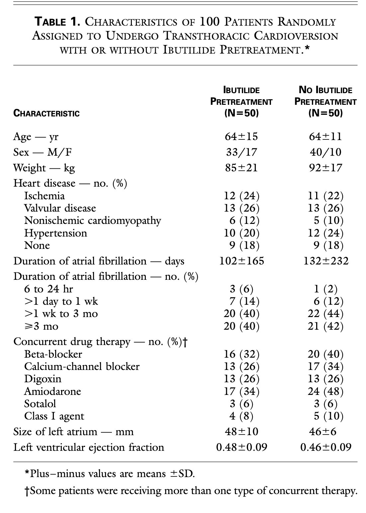
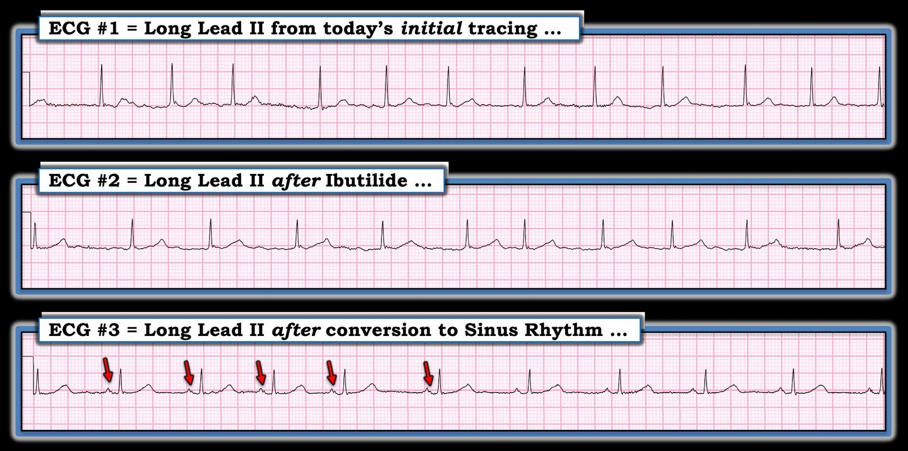

15/03/2023 — Rung nhĩ kịch phát ở một bệnh nhân vốn khỏe mạnh có gì lạ? Và điều gì đã xảy ra sau khi dùng ibutilide?
Bản dịch tiếng Việt của bài "What is strange about this paroxysmal atrial fibrillation in an otherwise healthy patient? And what happened after giving ibutilide?" – Dr. Smith’s ECG Blog. Giữ nguyên toàn bộ 6 hình ảnh của bản gốc.
Bệnh nhân nữ trung niên này có tiền sử xa phẫu thuật tim khi còn nhỏ vì một “tiếng thổi ở tim”. Chiếc Apple Watch của bà đột nhiên báo rằng bà đang bị rung nhĩ. Bà có nhận thấy một chút gì đó không ổn về mặt chủ quan, nhưng không hồi hộp đánh trống ngực, không đau ngực, không khó thở, cũng không có bất kỳ triệu chứng nào khác.
Khám hoàn toàn bình thường, ngoại trừ nhịp tim không đều.
Bà không dùng thuốc gì.
Kali bình thường. Troponin âm tính.
Đây là điện tâm đồ của bà:


Điều gì bất thường ở đây?
Bệnh nhân có nút AV khỏe mạnh, không dùng thuốc ức chế nút AV và không bị tăng kali máu thì lẽ ra phải có đáp ứng thất nhanh nếu bị rung nhĩ kịch phát.
Tôi không biết vì sao bà không có tần số nhanh.
Nhưng khi thấy điều này, bạn nên nghi ngờ rằng nút AV không khỏe.
Bác sĩ điện sinh lý của chúng tôi cho tôi biết rằng các vận động viên được tập luyện ở cường độ cao có thể có trương lực phế vị cao đến mức không có đáp ứng thất nhanh.
Siêu âm tim tại giường của bà bình thường
Chúng tôi quyết định chuyển nhịp cho bà vì thời điểm khởi phát còn rất gần.
Tôi bàn giao bà cho một đồng nghiệp.
Anh ấy quyết định dùng ibutilide 1 mg trong 10 phút. Ibutilide có thể chuyển nhịp rung nhĩ, hoặc nếu rung nhĩ kháng với sốc điện chuyển nhịp thì ibutilide có thể giúp sốc điện chuyển nhịp dễ thành công hơn (xem phần tôi mô tả bài báo trên New England Journal bên dưới).
Đây là điện tâm đồ sau khi dùng ibutilide:


Bạn nhận thấy điều gì?
Khoảng QT giờ đây dài hơn nhiều, khoảng 460 ms. Trước đó là 390 ms. Đây là tác dụng của ibutilide lên quá trình tái cực.
Sau đó họ đã sốc điện chuyển nhịp thành công cho bệnh nhân. Đây là điện tâm đồ sau chuyển nhịp:


Nhịp xoang, vẫn còn khoảng QT dài hơn.
Bình luận:
Tôi sẽ thử sốc điện chuyển nhịp trước và chỉ dùng ibutilide nếu sốc điện không hiệu quả. Trong nghiên cứu dưới đây, hầu hết bệnh nhân đều có bệnh tim nặng và họ ít có khả năng chuyển nhịp chỉ bằng sốc điện đơn thuần. Bệnh nhân này vốn khỏe mạnh và lẽ ra sẽ chuyển nhịp bằng sốc điện mà không gặp vấn đề gì. Nếu dùng ibutilide thì bạn phải lo đến mọi biến chứng, kể cả QT dài.
Như Dr. Richard Gray nói: “Dòng điện là phương pháp điều trị có thời gian bán thải ngắn nhất trong mọi phương pháp chúng ta dùng!!”
Vì vậy nó an toàn.
Facilitating Transthoracic Cardioversion of Atrial Fibrillation with
Ibutilide Pretreatment (Tạo thuận lợi cho sốc điện chuyển nhịp qua thành ngực ở bệnh nhân rung nhĩ bằng điều trị trước với ibutilide). Hakan Oral, New Engl J Med ngày 17 tháng Sáu năm 1999;
340(24):1849-54.
Tóm tắt
Bối cảnh. Không phải lúc nào rung nhĩ cũng
chuyển được về nhịp xoang bằng sốc điện chuyển nhịp qua thành ngực.
Chúng tôi khảo sát tác dụng của ibutilide, một thuốc chống loạn nhịp nhóm III,
lên mức năng lượng cần thiết để khử rung nhĩ và đánh giá
giá trị của thuốc này trong việc tạo thuận lợi cho chuyển nhịp ở bệnh nhân
rung nhĩ kháng với sốc điện chuyển nhịp qua thành ngực
thông thường.
Phương pháp. Một trăm bệnh nhân đã bị rung
nhĩ trung bình (±SD) 117±201 ngày được phân ngẫu nhiên
sốc điện chuyển nhịp qua thành ngực có hoặc không có điều trị trước bằng 1
mg ibutilide. Chúng tôi thiết kế một phác đồ tăng dần, trong đó các cú sốc 50,
100, 200, 300 và 360 J được dùng để chuyển nhịp qua thành ngực. Nếu
sốc điện chuyển nhịp qua thành ngực không thành công ở bệnh nhân
chưa được điều trị trước bằng ibutilide, thì cho ibutilide và
thử sốc điện chuyển nhịp qua thành ngực lại.
Kết quả. Chuyển về
nhịp xoang đạt được ở 36 trong 50 bệnh nhân không được dùng
ibutilide (72 phần trăm) và ở toàn bộ 50 bệnh nhân được dùng ibutilide
(100 phần trăm, P<0.001). Ở cả 14 bệnh nhân thất bại với sốc điện chuyển nhịp qua thành ngực
đơn thuần, nhịp xoang được phục hồi khi thử sốc điện
lại sau khi dùng ibutilide. Điều trị trước
bằng ibutilide đi kèm với giảm năng lượng trung bình
cần thiết để khử rung (166±80 J, so với 228±93 J khi không
điều trị trước; P<0.001). Nhịp nhanh thất đa dạng bền bỉ
xảy ra ở 2 trong 64 bệnh nhân được dùng ibutilide (3
phần trăm), cả hai đều có phân suất tống máu từ 0.20 trở xuống. Tỷ lệ
không còn rung nhĩ sau sáu tháng theo dõi
tương tự nhau ở hai nhóm được phân ngẫu nhiên.
Kết luận. Hiệu quả của
sốc điện chuyển nhịp qua thành ngực trong việc chuyển rung nhĩ về nhịp
xoang được tăng cường nhờ điều trị trước bằng ibutilide. Tuy nhiên, nên tránh dùng
thuốc này ở bệnh nhân có phân suất tống máu rất thấp. (N
Engl J Med 1999;340:1849-54.)
Bình luận của Smith từ toàn văn: Họ đưa vào những bệnh nhân bị rung
nhĩ dưới 48 giờ. Họ loại trừ bệnh nhân bị rung nhĩ
quá 48 giờ, trừ khi đã chứng minh bằng siêu âm tim qua thực quản là không có
huyết khối trong nhĩ HOẶC trừ khi đã cho thuốc chống đông 3 tuần trước đó *
Vì vậy, những bệnh nhân của chúng ta bị rung nhĩ < 48 giờ, hoặc đã
dùng thuốc chống đông, đều áp dụng được.
Họ loại trừ mọi bệnh nhân có QTc >
480ms vì ibutilide có thể gây xoắn đỉnh.
Liều là 1mg trong 10
phút
Ở 2 bệnh nhân bị xoắn đỉnh (cả hai đều có phân suất
tống máu thấp, <20%), cả hai đều được kiểm soát dễ dàng.
Các tác giả
khuyến cáo không dùng ibutilide cho chỉ định này ở bệnh nhân ổn định nếu
EF < 30%. Tuy nhiên, đây vẫn là một lựa chọn ở bệnh nhân không ổn định.
Ibutilide làm tăng QTc đáng kể (432+/-37 trước so với
482+/-49 sau)
Dù điểm này không được bàn trong bài báo, tôi
sẽ không cho một bệnh nhân như vậy về nhà trừ khi QT không còn kéo dài.



==================================
BÌNH LUẬN CỦA TÔI, bởi KEN GRAUER, MD (15/3/2023):
==================================
Tôi thấy ca hôm nay rất bổ ích ở chỗ làm nổi bật một số khía cạnh quan trọng về biểu hiện và điều trị ban đầu ở bệnh nhân đến khoa cấp cứu (ED) vì AFib mới. Dr. Smith điểm lại việc dùng ibutilide điều trị trước để tạo thuận lợi cho sốc điện chuyển nhịp qua thành ngực trong tình huống này — nêu ra những ưu điểm của việc thử sốc điện chuyển nhịp đơn thuần trước ở bệnh nhân AFib được cho là mới xuất hiện trong thời gian ngắn, nhất là khi những bệnh nhân này không có bệnh tim nền đáng kể (như trường hợp bệnh nhân hôm nay).
- Tôi tập trung bình luận vào một vài khía cạnh bổ sung về AFib mới.
Tầm quan trọng của bệnh sử:
Chúng ta được biết bệnh nhân hôm nay là một phụ nữ vốn khỏe mạnh — đến khoa cấp cứu vì AFib mới. Tuy nhiên, chúng ta không biết tuổi hay mức độ vận động của bệnh nhân — và cũng không biết tiền sử bệnh của bà, ngoài việc bà đã phẫu thuật tim khi còn nhỏ vì một “tiếng thổi ở tim”.
- Tầm quan trọng của tuổi — mức độ vận động — và tiền sử bệnh trước đây — nằm ở chỗ chúng giúp hiểu được bản chất của loại AFib mà bệnh nhân nhiều khả năng mắc.
NẾU bệnh nhân trẻ hơn và là người chơi thể thao:
Cơ chế AFib ở người trẻ hơn, chơi thể thao thường chịu ảnh hưởng mạnh của trương lực phế vị tăng (Rao và Shipon — ACC, 2019 — và — Calvo và cs. — Br J Sports Med, 2012). Trong khi ở mức gắng sức nhẹ đến vừa, nguy cơ xuất hiện AFib ở người trẻ hơn, chơi thể thao giảm đi — thì dường như có một “ngưỡng” cường độ gắng sức khi tập luyện sức bền lâu dài, vượt qua ngưỡng đó thì nguy cơ xuất hiện AFib lại tăng lên một cách nghịch lý!
- LƯU Ý: Dữ liệu về AFib ở người trẻ hơn, chơi thể thao mà tôi đã điểm lại (các nghiên cứu của Rao & Calvo, ở trên) — dựa trên y văn vốn được thực hiện chủ yếu ở nam giới. Vì vậy, việc có hay không sự khác biệt theo giới giữa vận động viên sức bền nam và nữ về tần suất AFib qua trung gian phế vị là chưa chắc chắn — và là một vấn đề còn tranh cãi trong y học thể thao (nghĩa là, một số nghiên cứu gợi ý AFib qua trung gian phế vị phổ biến hơn nhiều ở vận động viên nam — nhưng việc thiếu dữ liệu đầy đủ hạn chế các kết luận về tỷ lệ theo giới)
- Bệnh nhân hôm nay là nữ. NẾU hóa ra bà là một người trưởng thành trẻ hơn, cực kỳ tích cực với các hoạt động sức bền — thì trương lực phế vị tăng sẽ trở thành một yếu tố góp phần nhiều khả năng.
- Các yếu tố khác có thể góp phần làm xuất hiện AFib ở người trưởng thành trẻ hơn, chơi thể thao. Chúng bao gồm các biến đổi viêm ở tim (do tập luyện sức bền cường độ cao — theo thời gian, cuối cùng có thể dẫn đến một mức độ xơ hóa nào đó) — rối loạn điện giải (có thể nặng thêm do mất nước) — các biến đổi giải phẫu (nghĩa là, “tim vận động viên” — dẫn đến tăng kích thước các buồng tim kèm các thích nghi chức năng) — và hoạt động loạn nhịp tiềm tàng (đặc biệt là PAC tăng — bản thân chúng có thể khởi phát các cơn AFib). Dù vậy — vai trò của trương lực phế vị tăng thường là yếu tố chiếm ưu thế trong cơ chế sinh AFib ở người trẻ hơn, chơi thể thao.
- Về lâm sàng — Tầm quan trọng của việc tính đến trương lực phế vị tăng như một yếu tố góp phần gây các cơn AFib — mở rộng sang cả xử trí. AFib qua trung gian phế vị dễ xảy ra hơn vào ban đêm hoặc sau bữa ăn — và ít xảy ra khi gắng sức. Nhịp chậm nền ở vận động viên sức bền hạn chế việc dùng thuốc chẹn ß. Do đó — cách tiếp cận “viên thuốc trong túi” (pill in the pocket) để điều trị các cơn (nghĩa là, bằng một thuốc nhóm 1C) — thường được khuyến cáo ở vận động viên có AFib từng cơn (nghĩa là, PAF = rung nhĩ kịch phát, Paroxysmal AFib). Ngoài ra — đôi khi có thể thử disopyramide (đây là thuốc nhóm IA có tác dụng kháng cholinergic, có thể hiệu quả ở một số vận động viên nhờ làm giảm AFib qua trung gian phế vị). Cuối cùng, ở vận động viên tham gia tập luyện sức bền cường độ cao — giảm bớt mức cực độ trong tập luyện và thi đấu có thể làm giảm tần suất và mức độ nặng của các cơn AFib (một lựa chọn cá nhân để vận động viên cân nhắc).
NẾU bệnh nhân AFib mới là người lớn tuổi:
Sẽ thế nào NẾU bệnh nhân hôm nay là một phụ nữ lớn tuổi — đến viện với AFib mới và đáp ứng thất chậm chung như thấy trên điện tâm đồ ban đầu hôm nay?
- Trái với vai trò đáng kể của trương lực phế vị tăng trong việc khởi phát và duy trì các cơn AFib chậm ở người trẻ hơn, năng vận động thể lực — biểu hiện AFib mới với đáp ứng thất chậm hơn dự kiến lại rất khác ở bệnh nhân lớn tuổi.
- Thay vì trương lực phế vị tăng — SSS (hội chứng suy nút xoang, Sick Sinus Syndrome) trở thành nguyên nhân chủ yếu gây AFib mới với đáp ứng thất chậm ở người lớn tuổi.
- XIN NHẤN MẠNH: Chẩn đoán SSS đòi hỏi phải loại trừ các nguyên nhân khác gây AFib chậm không tương xứng ở bệnh nhân lớn tuổi. Chúng bao gồm: i) Dùng thuốc làm chậm tần số (nghĩa là, thuốc chẹn ß, digoxin, verapamil/diltiazem, v.v.); ii) Nhồi máu hoặc thiếu máu cục bộ cấp hay mới xảy ra; iii) Suy giáp; iv) Tổn thương thần kinh; v) Rối loạn điện giải; và, vi) Ngưng thở khi ngủ. Nếu không có yếu tố nào trong số này — thì bệnh nhân lớn tuổi (nghĩa là, trên khoảng 60 tuổi) bị AFib chậm mới xuất hiện nên được coi là có SSS cho đến khi chứng minh được điều ngược lại.
- Để biết thêm về SSS — Xem Bình luận của tôi ở cuối trang trong bài ngày 5 tháng Bảy năm 2018 trên Dr. Smith’s ECG Blog.
Vai trò của loạn nhịp xoang:
- Tôi thấy thú vị khi so sánh các dải nhịp chuyển đạo II dài trong 3 bản ghi liên tiếp của ca hôm nay (Hình 1).
- Không chỉ đơn thuần là đáp ứng thất chậm hơn dự kiến với AFib — tôi cho rằng có “nhịp theo nhóm” (group beating) trên điện tâm đồ #1 (nghĩa là, các nhóm 3 nhát khá giống nhau — mỗi nhóm cách nhau bởi một khoảng ngưng tương tự, hơi dài hơn). Dù có thể điều này phản ánh blốc AV hoàn toàn nền kèm dẫn truyền Wenckebach từ một ổ tạo nhịp thoát bộ nối — tần suất của rối loạn nhịp bất thường này đã giảm rất nhiều trong những năm gần đây do digoxin ít được dùng hơn. Vì vậy, tôi cho rằng ý nghĩa của dấu hiệu này trong ca hôm nay là chưa chắc chắn.
- Lưu ý rằng mọi dáng dấp của nhịp theo nhóm đã biến mất trên điện tâm đồ #2 (cho thấy rõ tính không đều hoàn toàn đặc trưng của AFib).
- Điện tâm đồ #3: Nhịp xoang đã được phục hồi sau sốc điện chuyển nhịp (nghĩa là, giờ đây thấy rõ sóng P dương ở chuyển đạo II này). Lưu ý khoảng R-R không đều khá rõ — cho thấy chắc chắn có loạn nhịp xoang.
- Áp dụng cho ca hôm nay: Có mối tương quan rõ ràng giữa loạn nhịp xoang và sự dao động của trương lực phế vị (Soos — Stat Pearls: Sinus Arrhythmia — ngày 25 tháng Mười Một năm 2022). Sự hiện diện của loạn nhịp xoang khá rõ trên điện tâm đồ #3 sau khi chuyển về cơ chế xoang gợi ý rằng trương lực phế vị tăng có thể quả thật đã đóng vai trò trong ca hôm nay (và có lẽ nhịp theo nhóm trên điện tâm đồ #1 trong lúc AFib cũng mang hàm ý tương tự?).


SUY NGHĨ CUỐI CÙNG: Cơn hôm nay có phải là cơn AFib lần thứ 1?
AFib là rối loạn nhịp tim bền bỉ thường gặp nhất — với tần suất tăng mạnh theo tuổi. Nhân viên y tế cấp cứu chỉ thấy “phần nổi của tảng băng” trong số cơn AFib khổng lồ này — gồm những bệnh nhân gọi đội cấp cứu ngoài viện (EMS) hoặc đến khoa cấp cứu vì hồi hộp đánh trống ngực mới khởi phát, đợt cấp suy tim, đột quỵ cấp (hoặc triệu chứng khác liên quan đến AFib của họ).
- Ít được chú ý là số lượng đáng ngạc nhiên bệnh nhân AFib không có triệu chứng trong một số (hoặc tất cả) cơn của họ. (Ballatore và cs. — Medicina (Kaunas) 55(8): 497, 2019 — và — Page và cs. — Circulation 107:1141-1145, 2003).
- Ước tính 10 đến 40% tổng số bệnh nhân AFib không có triệu chứng liên quan đến rối loạn nhịp này. Có tới một nửa toàn bộ gánh nặng AFib nằm ở nhóm bệnh nhân AFib từng lúc (hay kịch phát) — và trong quần thể đó, một số nghiên cứu Holter cho thấy phần lớn các cơn PAF không đi kèm triệu chứng. Có thể hình dung — việc thu thập dữ liệu và rút ra kết luận về nguy cơ tim mạch và mạch máu não là khó khăn ở nhóm lớn bệnh nhân AFib chủ yếu không triệu chứng này.
- Điều này liên quan thế nào đến ca hôm nay? — Bệnh nhân hôm nay đến viện với AFib mà không có đau ngực, khó thở hay hồi hộp đánh trống ngực. Thay vào đó — lý do người phụ nữ này đi khám là bà chủ quan nhận thấy “có gì đó không ổn” — rồi thấy một nhịp bất thường khi nhìn vào Apple Watch của mình.
- Dù có lý khi cho rằng cảm giác chủ quan “có gì đó không ổn” của bà có thể quả thật đánh dấu khởi phát cơn AFib “mới” lần thứ 1 — dữ liệu của Ballatore và Page (link tới các tài liệu này đã dẫn ở trên) gợi ý rằng cũng có khả năng tương đương là bệnh nhân hôm nay đã có các cơn “AFib thầm lặng” không triệu chứng trong một thời gian. Tôi ngờ rằng biểu hiện trong ca hôm nay có thể mang hàm ý tiên đoán khác về thời điểm khởi phát thực sự của rối loạn nhịp ở bệnh nhân này — so với một bệnh nhân thức giấc vì hồi hộp đánh trống ngực khởi phát đột ngột do AFib kèm đáp ứng thất nhanh thường gặp — mà ở họ, khả năng đây thực sự là khởi phát của “cơn lần thứ 1” có vẻ cao hơn nhiều.
- LƯU Ý CỦA TÁC GIẢ: Tôi từng đặt câu hỏi liệu lợi ích chung có được từ “theo dõi bằng Apple Watch” của bệnh nhân có vượt trội các tác hại tiềm tàng hay không. Những hạn chế tiềm tàng của việc bệnh nhân tự theo dõi rối loạn nhịp — là khả năng phát hiện của Apple Watch kém chính xác hơn trong đánh giá hoạt động nhĩ (tiếp xúc LA-RA với Apple Watch dẫn đến việc theo dõi một kết nối chuyển đạo I — thay vì kết nối chuyển đạo II, trong đó sóng P sẽ được thấy rõ hơn). Mối lo chính của tôi về theo dõi bằng Apple Watch — là nguy cơ làm tăng lo âu ở những người vốn khỏe mạnh, trở nên quá chú tâm vào câu hỏi “Apple Watch của tôi đang hiện rối loạn nhịp khủng khiếp gì vào đúng lúc này?” Dù vậy — ca hôm nay là một minh họa tuyệt vời cho trường hợp theo dõi bằng Apple Watch đã thực sự giúp ích quan trọng trong việc phát hiện rối loạn nhịp.